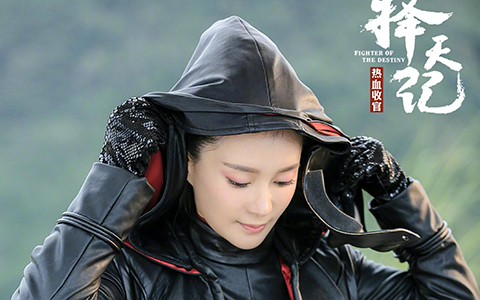
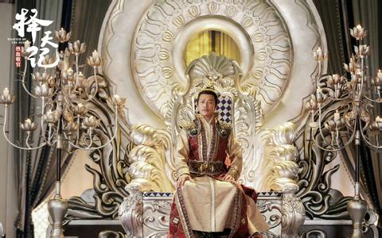
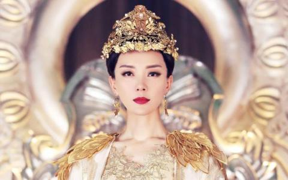

长生，终于来了。
敢于去想，在梦想实现之前，永远不给自己提前设限，不给自己寻找任何退缩的借口、失败的理由，只有这样，我们才有可能把看似遥远的梦想，变成真正的现实。
来吧，点击观看
师妹...你是我的
《择天记》中，秋山家是南方第一大族，这一代秋山家，出了位惊才绝艳的年轻子弟，名为秋山君。
在剧中，秋山君拥有真龙血脉，是难得的修炼天才，而且难得的是，秋山君人如其名，如同秋天的太阳一般，是个暖男，并且人品值得肯定。堪称完美的一个存在
来吧，点击观看
黑袍,教宗,圣后

黑袍是周独夫的妹妹，王之策的妻子周玉人，小编本以为《择天记》开拍时小说还没有更到那章，所以黑袍的人设会变，没想到最后编剧居然遵循了原著，也算是个惊喜
来吧，点击观看

教宗本命叫寅行道，是大周的教宗，五圣人之一。除此之外，教宗还是计道人的师弟，实力深不可测。在很多年前的那场叛乱中坚定不移的支持圣后，才造就如今的太平盛世。
来吧，点击观看

圣后，天之骄子，凤凰血脉，掌控星盘大阵，对天下众生予取予求。太宗死后，用亲生儿子献祭，获得星盘大阵的掌控权，并成功抵御了魔族的入侵，登基称帝。
来吧，点击观看